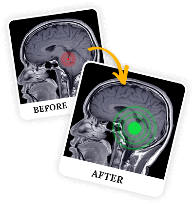

Neurocientista de Nova York diz a todos:
“Todo homem e mulher precisa saber disso...””
Nova Pesquisa Revela
Ritual de Ondas Cerebrais
Atrai Dinheiro...
“A descoberta de Dr. Summers confirma nossos ensinamentos que remontam a 800 A.C.”
-Jin Ling, Monge Budista, Mosteiro Zendar
- Neurocientista descobriu uma nova maneira de manifestar mais abundância financeira..
- Descubra como 18.366 pessoas antes sem dinheiro substituíram contas preocupantes e dívidas estressantes por uma vida de abundância..
- Um estudo inovador da Columbia confirma que a região do cérebro responsável por isso tem 250 milhões de anos, é do tamanho de uma noz e está dentro do seu cérebro neste momento..
Referências Científicas e Estudos Clínicos de Apoio:

Se você quer ficar rico, só há uma coisa que você deve fazer.
Acha que sabe o que é? Faça o teste:
-
A.Eu preciso de uma empresa como
Jeff Bezos (Dono da Amazon).Incorreto! -
B.Eu preciso ter um pai rico como Donald Trump.Não!
-
C.Eu preciso de um diploma de uma boa faculdade como Harvard.Isso não é um problema!
-
D.Eu preciso “conhecer as pessoas certas.”Não é verdade!
-
E.Eu preciso da Lei da
Atração.Errado!
A verdade é que não é NENHUMA
dessas coisas.
-
Você pode acessar o YouTube ou pesquisar no Google.
-
Você poderia verificar
todos os canais de TV. -
Você poderia comprar o curso de qualquer guru.
-
Você pode até ler todos os livros na Amazon...
..E você ainda não encontrará essa ÚNICA coisa.
Porque essa coisa está dentro de você agora. É uma onda cerebral microscópica que, quando ativada, pode ajudá-lo a manifestar a abundância que você realmente deseja...
Um Simples Ritual em Casa.. Cientificamente Comprovado por Quatro Laboratórios de Neurociências.. Que Manifesta Abundância...
Basta um simples ritual de Ondas Cerebrais para você começar a manifestar mais abundância, diz o importante Neurocientista Dr. Thomas Summers..
“Este avanço mudará muitas, muitas vidas.”
E eu deveria saber. Eu costumava estar tão falido que minha esposa me HUMILHAVA na frente da minha própria filha.
Mas bastou esse simples Ritual Caseiro e a abundância começou a aparecer em minha vida de todas as direções, deixando minha esposa sem palavras..
Agora entendo que tudo isso parece um pouco fácil demais. (Ou estranho.) Mas esse Simples Ritual em Casa me tornou rico e ajudou milhares de pessoas em mais de 70 países.
Permita-me apresentar-me. Meu nome é Dave Mitchell. Não sou médico, neurocientista ou guru. Sou um marido e pai que só queria dar uma vida melhor à minha filha e à minha esposa. Mas nunca imaginei o que aconteceu a seguir...
Continue lendo para ver como o dia mais difícil da minha vida revelou a chave para você ficar rico além dos seus sonhos mais loucos:
O Dia Que Eu
Quebrei o Coração Da Minha Filha
(e como isso fez o dinheiro começar a aparecer em toda a minha vida)
“Papai, meu aniversário é daqui a 2 dias!”
Minha filha Sarah pulou de alegria. Mas eu não tinha comprado o presente dela – um patinete elétrico. Eu estava com pouco dinheiro. .
Minha esposa me deu uma cotovelada nas costelas: “Você já comprou o presente dela? Ou você precisa pedir emprestado? Porque o Banco de Esposas está fechado para perdedores.”
Eu a ignorei, examinando uma carta que havia chegado para mim, quando senti minha garganta secar...
O banco estava exigindo R$ 4.666. Eu mal tinha R$ 466...
“Pensamentos positivos, apenas tenha pensamentos positivos”..
Meu telefone tocou – era ninguém menos que o Dr. Rothstein. Ele era o representante de vendas de hoje. Ele finalmente iria comprar as máquinas de água que eu vendo, eu quase podia sentir o gosto do universo mudando a meu favor..
O Doutor compraria. Então eu poderia comprar o presente de aniversário para minha filha Sarah. E talvez até receber uma migalha de respeito da minha esposa..
“Olá, Dr. Rothstein, lindo dia, certo?”
“Olá Dave, na verdade é Rhonda, assistente do Dr. Rothstein. O Dr. Rothstein não consegue marcar a reunião hoje. Talvez possamos remarcar para outro momento. Peço desculpas por qualquer inconveniente causado."
Eu me senti pequeno como uma formiga. Então minha esposa gritou...
“Dave, você estava tão ocupado vendo seu time perder que se esqueceu de pagar a conta do carro que EU DISSE PARA VOCÊ PAGAR? Seu idiota estúpido, eles estão rebocando seu carro..”
Atirei no pescoço ao ver meu Toyota sendo rebocado...
Eu tentei desesperadamente ser um bom pai e marido, ser positivo e manifestar meus desejos, mas o universo parecia determinado a me manter para baixo...
“Por Que o Universo Me ODEIA? O Que Eu Fiz De Errado?”
Não importa, eu nunca desisti.
Sem carro, peguei minha filhinha pela mão e murmurei, “Querida, hoje vou te acompanhar até a escola”..
Quando chegamos à escola, Sarah olhou para mim com aqueles olhos suplicantes, apertando meu coração..
“Papai, tudo que eu quero de aniversário é aquele patinete elétrico que vimos na TV. Aquele grande o suficiente para que possamos andar juntos!”
Lembrei-me do patinete elétrico.. custava R$ 2.999.. a única maneira de conseguir isso era roubando-o..
Não sei que força demoníaca tomou conta de mim naquele momento. Mas eu olhei nos olhos da minha filha de 6 anos e menti na cara dela..
“Não se preocupe, querida. Papai está trabalhando em uma surpresa especial para você."
Eu queria vomitar.
Relâmpagos Atingem:
Como Uma Noite Escura e Tempestuosa Me Concedeu Acesso ao
Santuário Interior De Um Importante Neurocientista..
Voltando para casa, pensei na minha tarefa impossível de conseguir aquele patinete elétrico para Sarah.
Eu tentei a Lei da Atração e trabalhei em 2 empregos. Eu tentei “ter sorte” no cassino. Comprei ingressos para todas as loterias. E meu time sempre perdia quando eu apostava nele (e ganhava quando eu não apostava).
Eu perdi pagamentos de aluguéis acreditando nas promessas de gurus ricos e pagamentos de carros para esquemas de pirâmides. Nunca cometi um crime, mas Eu me perguntei quanto tempo de prisão eu cumpriria por roubar um patinete elétrico, quando trovões e chuva começaram a rugir acima de mim...
Correndo para me proteger, entrei pela porta lateral de uma universidade local, completamente desorientado..
Eu estava em algum tipo de laboratório de pesquisa quando um homem de jaleco branco me olhou intrigado.
“Sinto muito, estava tentando me esconder da chuva.”
“Ahh, preso na chuva”, disse ele. “Isso é um pouco de azar. Você tem muito azar?”
Havia algo na maneira como ele perguntou que me fez desabafar…
Falei da minha filha, da minha esposa, do meu trabalho, da minha vida como capacho do universo e de como, não importa o que acontecesse, eu nunca desistiria..
Eu Derramei Minhas Entranhas Para o Misterioso PhD..
Embora ele tenha ouvido educadamente, eu esperava ser expulso de seu laboratório..
Ele falou,
“A sorte muda para pessoas que nunca desistem como você. Sim, Eu acho que você pode ser o único.”
Houve uma longa pausa, como se ele estivesse decidindo se deveria falar o que pensava..
Graças a Deus ele decidiu que sim..
“Amigo, meu nome é Dr. Summers. Eu tenho uma filha pequena como você. Sou neurocientista e não acredito mais em coincidências. Você ficará cético no início em relação ao que vou lhe dizer agora, mas deve ter paciência comigo. Você entende?”
Eu balancei a cabeça que sim e o Dr. Summers continuou..
Neurocientista Renomado Revela o Segredo Surpreendente Para Atrair Dinheiro (e não é o que você pensa)..
“No ano passado, fui recrutado para um laboratório de ideias com financiamento privado formado por importantes neurocientistas e psicólogos..
O programa foi iniciado para desenvolver ondas cerebrais que se sincronizam com dinheiro e riqueza, com base em novas pesquisas que poucos viram..
Logo após seu início, desenvolvemos o projeto utilizando tecnologia de ondas cerebrais que demorava cerca de 7 minutos por dia. Um pequeno grupo de associados descobriu que a tecnologia poderia ser usada para atrair dinheiro, muitas vezes em grandes somas. Esses cientistas começaram a usar a tecnologia para começar a fazer as coisas que queriam.
Os investidores insistiram no sigilo. Ninguém poderia saber o que havíamos encontrado. Eles exigiram que esta tecnologia fosse disponibilizada apenas ao escalão superior de políticos e funcionários do governo.
Para mim, isso foi um crime contra a humanidade. Mas estou proibido de compartilhar esta tecnologia publicamente. Você não está. E eu não sabia como iria travar minha guerra até que o universo decidiu enviar você para o meu laboratório hoje.”
“Fui Estritamente Proibido De Compartilhar Esta Tecnologia....”
Eu não conseguia acreditar nesse charlatão da ciência..
Eu estava prestes a ir embora quando imaginei os olhos da minha filha olhando para mim...
Imaginei uma vida onde nem sempre tivesse pouco dinheiro, onde não tivesse que esconder meus recibos do caixa eletrônico, onde não estivesse sempre preocupado com contas vencidas ou para quem devia dinheiro, uma vida onde eu pudesse realmente fornecer riqueza e segurança para minha família..
Então Eu Fiquei..
“Vou lhe mostrar um mundo que a maioria das pessoas nunca vê, o mundo da sua mente.
Seu cérebro produz 4 ondas principais. Nós medimos essas 4 ondas em uma máquina de Eletroencefalograma.
Mas para os nossos propósitos, apenas duas dessas ondas importam: Beta e Theta.
A Onda Beta está associada à vida diária. Estar ocupado. Estresse. Má sorte com sua saúde. No laboratório, chamamos Beta de Onda Escrava.
Então, quando você ouvir Beta, pense: POBREZA.
Beta: A Onda de Escravos
Agora a Onda Theta é o oposto, é a porta de entrada para o dinheiro..
Theta é a onda dominante em criatividade, insights intuitivos, cura do corpo, aprendizado acelerado e sentimentos de felicidade..
Um estudo de psicologia da NASA descobriu que Theta aumenta drasticamente a memória. Uma equipe de PhDs no Japão descobriu que o famoso “estado de fluxo” está ligado a Theta. E um importante pesquisador russo descobriu que Theta está ligado a sentimentos de felicidade.
Thomas Edison inventou uma engenhoca que ativou Theta. Ele usou esse dispositivo para resolver seus problemas mais difíceis e, curiosamente, essa foi uma das únicas invenções de sucesso que Edison nunca vendeu publicamente.
No laboratório, chamamos Theta de Onda Cerebral Bilionária.
Então, quando você ouvir Theta, pense em: DINHEIRO.
Theta: A Onda Cerebral Bilionária
Já que você precisa de mais Theta, você deve saber que a fonte de energia do Theta é uma pequena região do tamanho de uma noz em seu cérebro chamada hipocampo..
Quanto maior o seu hipocampo, mais Theta você obtém.
Então o que você realmente precisa é de um hipocampo grande e grosso.
Mas aqui está o que os investidores queriam ocultar:
Neurocientista de Destaque: “Esta é a Verdadeira Razão Pela Qual a Lei Da Atração e Outros Métodos De Manifestação PODEM NÃO Funcionar!”
Numerosos estudos descobriram que pessoas que não cresceram ricas tinham um hipocampo encolhido, o que reduz o seu Theta.
Continuamos tentando refutar esse fato porque é muito injusto com as pessoas que não cresceram ricas, mas falhamos..
Quando pessoas ricas falam em “manter tudo na família”, não estão falando apenas de dinheiro vivo..
A riqueza começa dentro de seu cérebro e então eles a transmitem neurologicamente pela linhagem..
Centenas de Exames de Ressonância Magnética do Cérebro Revelam Uma Descoberta Alarmante..
Meus pais não tinham um patrimônio líquido de 8 ou 9 dígitos. Nem os seus. Isso significa que ambos produzimos menos Ondas Cerebrais Bilionárias e mais Ondas Escravas.
Qualquer neurocientista poderia conectar seu cérebro a um Eletroencefalograma agora mesmo e ver suas ondas cerebrais:
A Onda Escrava sequestra suas ondas cerebrais, bloqueando a ativação da Onda Cerebral Bilionária, empilhando o baralho de manifestação contra você..
Uma equipe de neurocientistas da Universidade de Columbia acaba de usar ressonâncias magnéticas para publicar seu primeiro estudo demonstrando esse “efeito de hipocampo encolhido”. Eles estão começando a puxar o fio que selaram, esconderam e armazenaram, mas levarão anos para descobrir o que nossa equipe enormemente financiada descobriu.
Isso é o que eles estão escondendo de você. A verdadeira razão pela qual a manifestação não funcionou para você não é culpa sua. Em 30 anos, esta descoberta estará no mesmo nível da descoberta da gravidade ou da eletricidade.
E o seu hipocampo encolhido é uma prova de quão neuroplástico é o hipocampo. Isso significa que a máquina de ganhar dinheiro da sua mente pode se transformar rapidamente com esta tecnologia.
Você conserta isso e o dinheiro pode começar a aparecer em toda a sua vida.
A CHAVE é Ativar A “Fonte de Energia” Que Gera a Onda Cerebral Bilionária..
Em busca da solução, falhamos no início. Estávamos procurando no lugar errado. Então, uma nova pesquisa da Universidade de Kyoto mostrou que as ondas sonoras mudam rapidamente a expressão genética e o funcionamento do cérebro. Então mudamos nosso foco. Começamos a observar as ondas sonoras mais reverenciadas pelas culturas antigas, aquelas às quais o seu cérebro não foi exposto.
Os xamãs usam ondas sonoras. O mesmo aconteceu com as antigas cerimônias dos gregos e dos nativos americanos. As suas descobertas obrigaram Da Vinci e Tesla a mergulhar também nestas vibrações. Os antigos de Tuva, cuja riqueza deixou até os estudiosos mais estudados coçando a cabeça, até desenvolveram uma onda sonora bizarra chamada Canto da Garganta, permitindo-lhes prosperar nas condições mais adversas conhecidas pelo homem, enquanto todos os seus vizinhos pereciam.
E faz sentido. Todos nós conhecemos o poder das vibrações, que é o que molda tudo no universo.
A Primeira Onda Sonora Baseada em Theta, Baseada Em Pesquisas Inovadoras
Com base nisso, nós desenvolvemos a primeira frequência sonora baseada em Theta para atingir o hipocampo.
Desenvolvemos então 3 ondas sonoras adicionais que parecem ainda mais potentes, mas permanecem inacabadas. Elas são meu foco hoje.
Mas esta primeira onda sonora está acabada e extremamente precisa. Possui 9 casas decimais e atinge 3 frequências simultaneamente. Ela começa a ativar sua Onda Cerebral Bilionária desde a primeira vez que você experimenta. Foi isso que permitiu aos primeiros cientistas atrair dinheiro.
Na sua mão estou colocando um iPod. A onda sonora já está carregada nele. Ativar a Onda Cerebral Bilionária não é complicado. Ouça isso 7 minutos por dia e as mudanças podem começar a acontecer.”
Você é agora a última esperança para garantir que isso não desapareça para sempre.”
“Ouça isso 7 minutos por dia e as mudanças podem começar a acontecer.”
Saí totalmente atordoado..
Tudo fez muito sentido..
Não é a toa que eu sempre luto para ter dinheiro..
Fui para casa e coloquei fones de ouvido sem saber o que esperar..
“O som era diferente de tudo que eu já tinha ouvido…”
Parecia que eu tinha saído do meu corpo enquanto ondas de prazer subiam pela minha medula espinhal, me transportando para um mundo de euforia..
Você já teve um pressentimento que não conseguia explicar, mas simplesmente sabia… que uma mudança estava ocorrendo para você?
Foi assim que me senti.. mas no dia seguinte.. nada aconteceu e dois míseros dias, isso é tudo que me resta até o aniversário da minha filha Sarah..
Mas no dia seguinte, recebi uma segunda carta daqueles idiotas cruéis do banco - eles magicamente encontraram MAIS dinheiro que eu devia a eles.. e perdi minha aposta no meu time...
“Eu estava fazendo errado?”
Ou tudo isso foi besteira? Eu só queria tanto acreditar que comecei a me sentir um tolo por acreditar..
Fiquei deitado na cama naquela noite, com um nó no estômago, imaginando os olhos de Sarah enquanto eu contava a ela que seu pai havia falhado com ela novamente..
Mas na manhã seguinte, foi como se a realidade tivesse mudado para mim..
No caminho para o trabalho encontrei uma nota de R$ 100 reais amassada num arbusto..
Que sorte, pensei..
Mas sorte ainda é sorte, certo?
Tentei ser cauteloso com minha excitação, mas então..
Na minha única reunião de vendas naquele dia, estraguei a venda... e mesmo assim o Doutor ainda comprou máquinas de água para todos os seus SEIS locais, me fazendo ganhar R$ 9.000 em um único dia!
“Eu Fiz Errado e Mesmo Assim Ganhei R$ 9.000 Em Um Dia!”
Bem a tempo para o aniversário de Sarah!
Você deveria ter visto a alegria no rosto dela quando lhe entreguei aquele patinete elétrico..
Ela continuou gritando,
“Papai, eu te amo!”
Então minha esposa me puxou de lado e disse..
“Dave, me desculpe por ter agido de forma tão cruel com você. Eu quero ser uma esposa melhor. Ultimamente tenho pensado em você quando você não está por perto. Então, não sei o que deu em você, mas, por favor, continue fazendo isso.”
Pude sentir anos de tensão deixando meu corpo quando minha filha sussurrou, “Papai, tenho um segredo para você. Você sabe por que eu queria meu patinete elétrico? Porque você está sem carro, e pode usá-lo para dirigir para seu trabalho! E então a mamãe também iria te amar de novo! Funcionou!!”
Isso foi quase um ano atrás.
Aqui está minha vida hoje..
::ATUALIZAÇÃO::
A Onda Sonora De 7 Minutos Que
Me Deixou Mais Rico Que Um Cirurgião
E Deixou Minha Esposa Sem Palvras..
- Ganhei mais de R$ 500.000 vendendo as máquinas de água.
- Dobrei isso com Bitcoin e ganhei um prêmio jogando na loteria..
- Comprei uma linda casa de 410,77 metros quadrados para minha família em um condomínio fechado..
- Não tenho mais medo da minha esposa - Sinto-me amado por ela, nosso amor é intensamente apaixonado e isso foi antes de ela ativar sua Onda Cerebral Bilionária..
E agora estou escrevendo isto para você de um hotel à beira-mar no sul da França. Trouxe minha família aqui para férias há muito esperadas.
Então acho que é seguro dizer que ativei minha Onda Cerebral Bilionária exatamente como o Dr Summers disse.
Mas na ciência uma transformação não é prova suficiente..
E se o universo tivesse acabado de me escolher?
Para testar a Onda Cerebral Bilionária, fiz algo que nunca tinha visto nenhum guru fazer:
Eu realmente testei isso em um pequeno grupo de amigos e familiares e medi os resultados.
Estudo Oficial Dos Usuários:
Resumo das Descobertas e Resultados
Comecei o teste no dia 13 de janeiro com 5 pessoas no grupo de usuários..
-
ESPOSA: Minha esposa foi a primeira - ela perdeu 16 quilos sem fazer dieta, o que ajudou muito nas dores nos joelhos e nas costas, e ganhou R$ 20.300 em uma raspadinha de loteria.
-
PRIMA: Minha prima, uma professora da 1ª série cujo marido acabara de trocá-la por uma jovem de 22 anos chamada Candy, superou a agonia do divórcio e manifestou o homem dos seus sonhos, um médico de Nova Iorque..
-
AMIGO: Meu melhor amigo, um programador de computador muito cético, conseguiu a promoção pela qual tinha certeza de que seria preterido.
-
COLEGA DE TRABALHO: Um colega de trabalho, lutando com suas vendas, ganhou seu concurso de vendas, mandando ele e sua família de férias para o Havaí, onde conheceram Jason Momoa aleatoriamente!
Mas deixei o melhor para o final - minha filha Sarah..
Sarah agora tem três melhores amigas na escola e a professora diz que ela é a garota mais inteligente da turma..
O que realmente me surpreendeu é que tudo isso aconteceu em 6 semanas e eu nem contei a parte mais louca...
O dia em que comecei esse teste foi 13 de janeiro, que era sexta-feira, dia 13!
E isso nem importava!
É como se nenhuma sequência de azar, nenhuma maldição geracional, nenhum karma ruim pudesse resistir a alguém que finalmente ativou a Onda Cerebral Bilionária que está esperando para ser ativada dentro de você agora..
O que mais você poderia querer?
Agora que isso me deu a vida que sempre sonhei, eu sabia que tinha que honrar o último pedido do Dr. Summers e compartilhar isso com o público..

Apresentando ao Brasil a primeira frequência sonora baseada em Theta desenvolvida pelos principais neurocientistas e psicólogos dos Estados Unicos, que comprovadamente atinge exclusivamente o seu hipocampo e ativa a sua Onda Cerebral Bilionária..
O recurso que mais aprecio é a sua simplicidade e a capacidade de funcionar desde a primeira vez que você a experimenta..
Enquanto outras pessoas trabalham em turnos de 8 a 12 horas..
Ou gastam R$ 155 mil em um mestrado para poder subir um degrau na hierarquia corporativa..
Você pode simplesmente relaxar com um fone de ouvido por 7 minutos e atrair abundância financeira..
Tudo aproveitando o poder dos principais neurocientistas e psicólogos dos Estados Unidos..
Os Principais Neurocientistas Revelam o REAL Motivo Pelo Qual a Maioria Das Pessoas Nunca Se Torna Tão Rica Quanto Deseja..
A maioria das pessoas gastará seu tempo tentando de tudo para ficar rica..
Elas tentarão começar um negócio ou trabalhar em 2 empregos..
Elas tentarão a sorte no cassino, na loteria ou apostarão em criptomoedas..
Outras pessoas mais antenadas tentarão manifestar com a Lei da Atração ou afirmações..
Eu tentei todas essas coisas e aprendi que elas não funcionam até que sua Onda Cerebral Bilionária também seja ativada…
Não Passe Anos Sofrendo Como Eu Passei:
Junte-se Aos 18.366 Homens e Mulheres Que Agora Atraem Abundância Desde Que Ativaram Sua Onda Cerebral Bilionária..
E olhe para mim agora - estou com minha linda família, escrevendo para você do Sul da França, um lugar normalmente reservado para bilionários e celebridades…
É por isso que estou tão emocionado em compartilhar a Onda Cerebral Bilionária com você hoje..
- Eu sei como é lutar tanto apenas para sobreviver sem fim à vista..
- Trabalhar tanto só para sentir que está se afogando em uma pilha de contas e dívidas..
- E eu sei em primeira mão como é quase impossível progredir, não importa o quanto você se esforce..
Sempre surge alguma coisa que te mantém sem dinheiro..
Um conserto de carro aqui, uma consulta médica ali e nem falei de inflação..
Não é sua culpa que as circunstâncias já estavam contra você antes mesmo de você ter alguma chance..
Mas agora você viu a Onda Cerebral Bilionária dentro de você..
E desde o seu lançamento, a Onda Cerebral Bilionária ajudou literalmente milhares de pessoas em todo o mundo a atrair dinheiro, abundância e transformar suas vidas apenas por ativá-la..
O Que Pessoas Reais Como Você Estão Escrevendo Sobre Seus Resultados Com A Onda Cerebral Bilionária..
Todos os dias recebo mais mensagens de clientes informando que finalmente conseguiram um aumento ou conquistaram o emprego dos sonhos. Outros encontraram o amor que procuravam há anos, em apenas semanas ou meses. Quando leio essas mensagens, sei que estou aqui na Terra por uma razão - para ajudar as pessoas a ativarem a Onda Cerebral Bilionária para que o dinheiro e a boa sorte comecem a chegar!
-Emma,
Former Nurse In Santa Ana, CA
“R$ 10 mil/mês em renda passiva, não preciso mais trabalhar..”
“Minha família foi amaldiçoada. Isso é o que todos disseram. Minha casinha estava à venda há meses, sem compradores. E eu não aguentava mais meu trabalho. Após os primeiros 3 dias ouvindo a Onda Cerebral Bilionária, não sei por que, mas larguei meu emprego. Parecia certo. No dia seguinte recebi uma oferta pela minha casa 10% acima do preço pedido. Então ganhei R$ 26 mil nas apostas em uma semana. Comprei um imóvel alugado e estou ganhando R$ 10 mil a R$ 15 mil / mês extras em renda passiva.. Não preciso mais trabalhar. Vou fazer a viagem ao Egito e à Grécia que sempre desejei. Eu me sinto tão sortuda. Eu quebrei a maldição da minha família e estou compartilhando isso com minha família agora.”
-Michael,
Former Policeman Turned Home Business Owner In Stuart, Florida
“4 novos clientes em 5 dias.. Vou aparecer na TV..”
“Comecei a ouvir a Onda Cerebral Bilionária e nos últimos 5 dias consegui 4 novos clientes. Isso é UM cliente por dia. Eu costumava ter 1 cliente por mês, então essa tem sido uma jornada muito louca! Tornei-me amigo de várias pessoas ricas de Palm Beach e uma delas se ofereceu para me colocar na TV para promover meu novo negócio.”
-Monica,
Artist In Manhattan, New York
“Vendi mais arte do que posso imaginar, morando na cobertura dos meus sonhos..”
“Desde que descobri a Onda Cerebral Bilionária, manifestei a vida dos meus sonhos! Nova cobertura, múltiplos números na conta e muito mais! Fiquei enterrada em dívidas, de salário em salário, em um estúdio apertado, sem ninguém prestando atenção em meu trabalho artístico. Este ano vendi mais arte do que posso imaginar, minha renda agora é 20 vezes maior do que costumava ser e minha cobertura tem vista para o horizonte. Perdi 18 quilos e comprei o Carro dos meus sonhos. Eu amo a vida agora e desejo o melhor para você.”
Como Usar A Onda Cerebral Bilionária: São Apenas 7 Minutos Por Dia..
Então, agora você provavelmente está se perguntando: isso parece ótimo, mas como exatamente eu uso a Onda Cerebral Bilionária? É TÃO simples - aqui está o que você faz..
Depois de acordar de manhã, sente-se com uma xícara de café ou café da manhã ou o que quer que você tome pela manhã. Coloque um par de fones de ouvido e pressione PLAY no seu smartphone ou computador.
Ouça a onda sonora baseada em Theta uma vez por dia durante 7 minutos (já programamos tudo isso para você)..
E então vá aproveitar o seu dia! É realmente muito fácil.
A partir daí, você simplesmente deixa sua Onda Cerebral Bilionária fazer o que quer..
Em breve você começará a ver dinheiro, riqueza e as oportunidades mais incríveis começarem a fluir em sua vida..
Assim como aconteceu comigo, com minha família e com nosso grupo de usuários de teste e agora com milhares de outras pessoas em mais de 70 países que testaram a Onda Cerebral Bilionária desde então..
Eu Estou Fazendo O Meu Melhor Para Manter Este Site Online, Mas O Tempo Está Passando..
Quero avisá-lo: se você está vendo este site, isso significa que você ainda pode garantir sua cópia da Onda Cerebral Bilionária.
Porque não sei o número exato de dias que esta página ficará online. E estou lhe dizendo isso porque este site é o único lugar onde você pode obter a Onda Cerebral Bilionária.
Portanto, não sei por quanto tempo este site permanecerá online.
E não sei o que vai acontecer..
Então, se você acha que quer a Onda Cerebral Bilionária (e quem não gostaria?), Eu recomendo que você não feche esta página até que tenha garantido sua cópia da Onda Cerebral Bilionária.
“Você Realmente Não Está Fazendo Isso Por Dinheiro?”
Deixe-me tirar isso do caminho:
Não estou fazendo isso por dinheiro.
Todos os dias agora tenho mais dinheiro do que no dia anterior.
Estou fazendo isso porque foi o último pedido do Dr. Summers: Que eu compartilhasse isso com você.
E eu me lembro de como é ter a cabeça um pouco acima da água, sentindo que você poderia se afogar a qualquer momento.
Não há razão para que alguém precise mais sofrer..
“Quanto Custa Para Ativar Minha Onda Cerebral Bilionária Hoje?”
Todos deveriam ser capazes de ativar sua Onda Cerebral Bilionária e atrair dinheiro..
É por isso que não vou pedir que você desembolse muito dinheiro apenas para obter sua cópia da Onda Cerebral Bilionária.
E também não vou limitar a quantidade de tempo que você pode manter a Onda Cerebral Bilionária. Ela ficará com você e sua família para sempre.
Quanto valeria se você pudesse atrair dinheiro, se oportunidades incríveis continuassem surgindo para você, se você e sua família fossem uns dos sortudos, abençoados com dinheiro, riqueza e saúde?
Muitas pessoas me disseram que eu deveria cobrar R$ 30 mil por esses áudios!
Mas não estou nisso por dinheiro.
E quero honrar o risco incrível que o Dr. Summers correu para garantir isso para pessoas normais como eu e você..
Estou fazendo isso para divulgá-lo ao maior número de pessoas possível antes que este site não esteja mais online.
E cobrar o que os especialistas me dizem para cobrar desqualificaria as pessoas que quero ajudar.
Portanto, você não investirá R$ 30.000 hoje para obter esses áudios. Você não investirá R$ 10.000 ou mesmo R$ 1.000. Você não vai pagar nem R$ 300,00.
- R$30.000
- R$10.000
- R$1.000
Na verdade, não estou nem interessado em lucrar com isso.
Tudo o que peço é que você cubra as despesas necessárias para criar os áudios e administrar este site.
Assim, você terá acesso instantâneo a tudo por apenas R$ 247,00.
Mas isso não é tudo. Como você chegou até aqui, é óbvio que está falando sério sobre ter dinheiro e liberdade para aproveitar a vida dos seus sonhos a partir de hoje.
É por isso que quero que você tenha tudo agora mesmo a um preço especial disponível apenas por meio desta página HOJE. Então, eu gostaria de oferecer a você a Onda Cerebral Bilionária por apenas R$ 97. São mais R$ 150 de desconto.
E tudo que peço em troca é que você considere me enviar uma história de sucesso à medida que você começa a vivenciar a transformação de vida que tantos de nossos clientes estão vivenciando agora.
“Como Faço Para Ativar Minha Onda Cerebral Bilionária Agora?”
Tudo o que você precisa fazer é clicar no botão abaixo – leva menos de 30 segundos:
Recomendado Por Neurocientistas
E Aprovado Por Monges
Ative Sua
Onda Cerebral Bilionária
-
Desconto
Especial -
Acesso
Instantâneo -
Bônus
Especiais
Preço Normal: R$ 30.000 R$ 10.000 R$ 1.000 R$ 247,00
Só Hoje Por
R$ 97,00

Depois de clicar no botão “COMPRAR AGORA”, você será direcionado para nossa página de finalização de compra 100% segura, onde inserirá as informações do seu pedido.
O formulário de pedido é totalmente protegido usando a criptografia SSL de 256 bits mais recente para total privacidade e proteção.
E assim que você Finalizar o Pedido..
Sua faixa de áudio digital será enviada para você por e-mail logo após a compra.
O que significa que você economiza outros R$ 20 já que NÃO há taxas de envio.
E você não precisa esperar que um pacote físico seja enviado para sua casa..